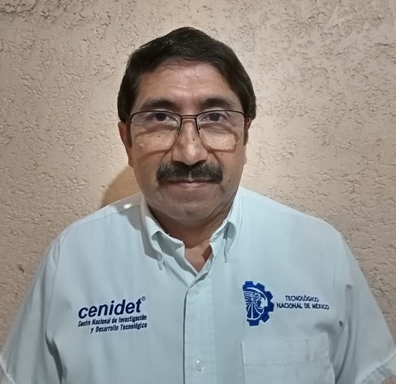
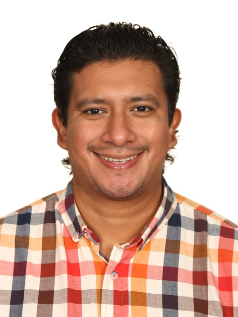
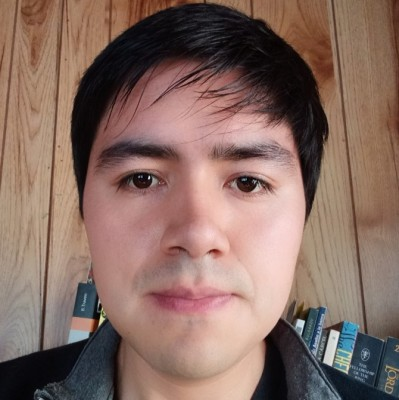
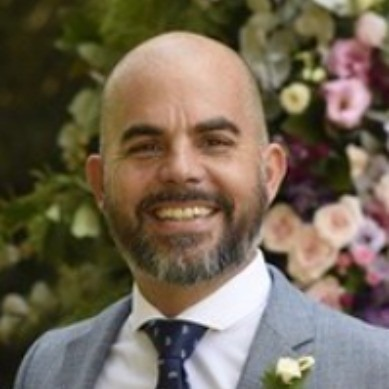

Q-DAY 2026
Un espacio de divulgación, formación y vinculación que reúne a estudiantes, docentes, investigadores y profesionales de la industria para explorar el presente y el futuro de las tecnologías cuánticas.
PONENTES

M.Sc. José Luis Ramírez Alcántara
Profesor-Investigador del Tecnológico Nacional de México / CENIDET.

Dr. Braulio Misael Villegas Mtz
Profesor investigador del Centro de Investigación en Ingeniería y Ciencias Aplicadas (CIICAp)

M.Sc. Victor Onofre
Quantum Algorithm Developer en Pasqal (Francia).
M.Sc. José Luis Rodríguez Gómez
Líder Técnico Senior de Cuentas IBM

Dr. Alejandro Fernández
Professor at the National University of La Plata, Researcher at CICPBA, Director of LIFIA. Quantum Computing - Software Enginnering - Knowledge Management
REGISTRO
Reserva tu lugar sin costo para participar en la primera edición de Q-Day. El registro es gratuito y está abierto para estudiantes, docentes, investigadores y profesionales.
Centro Nacional de Investigación y Desarrollo Tecnológico
Cuernavaca, Morelos